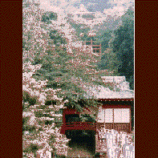

磯山弁財天/栃木県佐野市
最近、「くう みる
おがむ」という大胆なキャッチコピーとともに七福神巡りと佐野ラーメンで売り出し中の街、佐野。
市内の至るところにラーメン屋があるところだ。
その市街地を抜けると赤見温泉がある。
このあまり知られていない小さな温泉街の名物は水である。というのも、ここには出流原弁天池というとても奇麗な池があるのだが、ここの湧き水が日本名水百選に選ばれたのだ。
旨い水ではあった。が、問題なのはその弁天池の隣にある弁天様の方なのである。
これがナイスなのだ。
この弁天様、正式には磯山弁財天といって、池のすぐ隣、後山の山腹にあるもので、千年前に開山、現在の本殿は鎌倉時代に造られたもので、山の中腹に清水の舞台の様にやぐらが組まれていて、下から見ると赤い色も手伝って、非常に目立つ。
山の麓の山門を潜って階段を昇って本殿に行く。
江戸に火事が起ってもすぐに発見できるようにと、江戸の街が見渡せる様に造ったという説がある程、ここの眺めは良い。今では江戸の街は見えないが、それでも関東平野が一望出来る。
本殿内部を見る。
ここは水にまつわる神話が多く、特に白蛇信仰の強い土地なのであちこちに蛇の人形、というか蛇形が置いてある。
そしてその左手に狭くて急な階段があった。そういえば下から見た時この建物は2階建てだったことを思い出し、その階段を昇ってみた。
すると、そこには実に奇妙なモノが安置されていたのだ。
それは宇賀神様といって、胴は蛇、頭は人というモノなのだが、その顔がいかにもその辺の人のいいジイさんってカンジで思わず笑っちゃった位にいい具合なのだ。
1997.5.
珍寺大道場 HOME